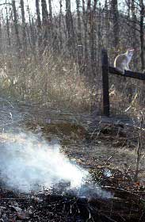

BARBARA PLEASANT
We had enough stuff to do a second smolder, so the winter squash in the smoking bed will grow atop two layers of biochar – plus the compost I'll add as I prepare for planting. A few feet away, a second bed will get an equal share of compost, but no biochar. I'll report back in the fall on how they do.